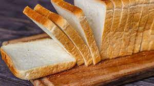

Pão de Forma
Ingredientes
- 2 xícaras de leite morno
- 2 ovos
- 1/3 xícara de óleo
- 1 colher (sopa) açucar
- 1 colher (café) sal
- 30g fermento biológico
- 4 xícaras de farinha de trigo
Receita
- No liquidificador, bata o leite, os ovos, óleo, o açúcar, o sal e o fermento
- Depois em uma tigela misture com a farinha de trigo.
- Unte duas formas de pão, despeje a massa e deixe descansar por 20 minutos.
- Asse a 180° C por 30 minutos.
Pão Francês

Ingredientes
- 1/2 kg de farinha de trigo
- 10 g de fermento para pão
- 15 g de sal
- 120 g de açúcar
- 1 colher (sopa) se margarina
Receita
- Dilua o fermento em um copo de água morna com o açúcar.
- Misture os outros ingredientes.
- Amassa e levante, empurrando a massa para frente, com a palma da mão e dobrando-a sobre si mesma.
- Se for necessário, coloque mais água e mais farinha.
- Deixe descansar por duas horas.
- A seguir, amasse novamente e prepare o pão, dando-lhe o formato desejado e coloque no tabuleiro untado.
- Deixe que ela descanse mais uma hora.
- Aqueça o forno e pincele o pão com água antes de colocá-lo no forno.
- Assar por 40 minutos mais ou menos.
(Se estiver pegajosa, espalhe mais farinha por cima.)
Pão de Queijo
Ingredientes
- 1 caixinha de creme de leite (200 ml)
- 1 copo (requeijão) de queijo ralado (misturei parmesão e mussarela ralada)
- 1 copo (requeijão) de polvilho (usei polvilho doce)
Receita
- Amasse até soltar das mãos (caso precise um pouquinho a mais de polvilho, coloque aos poucos até que chegue ao ponto de enrolar).
- Faça bolinhas, coloque em forma untada e asse em forno preaquecido bem quente.
- Asse até ficarem douradinhos levemente.
(se achar necessário, acrescente sal.)